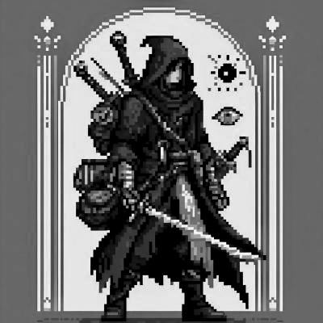

El Calabozo de Jamir
Bitacora de un Paladin Digital
🎶 Playlist de Taberna 🎶
[ ./Todo.sh ]
[ ./Crónicas.sh ]
[ ~/Grimorio ]
[ ./Taberna.sh ]
[ ./Cartas.sh ]
[ git_Skills ]
[ {Proyectos} ]
[ X ]
Título del Pergamino
2025-01-01
#Tag